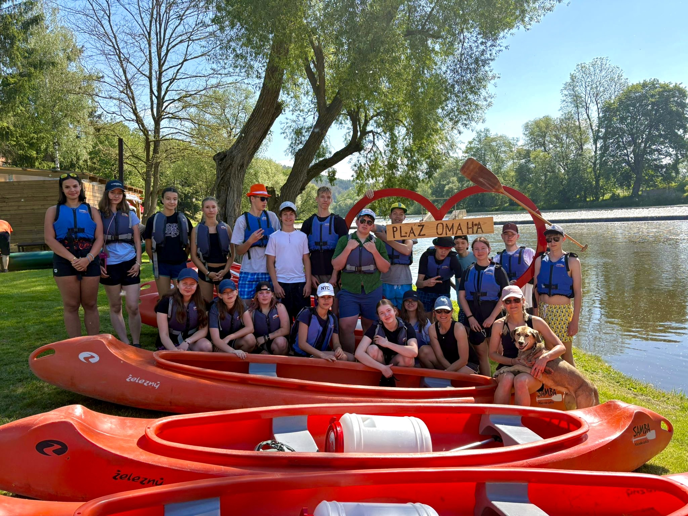
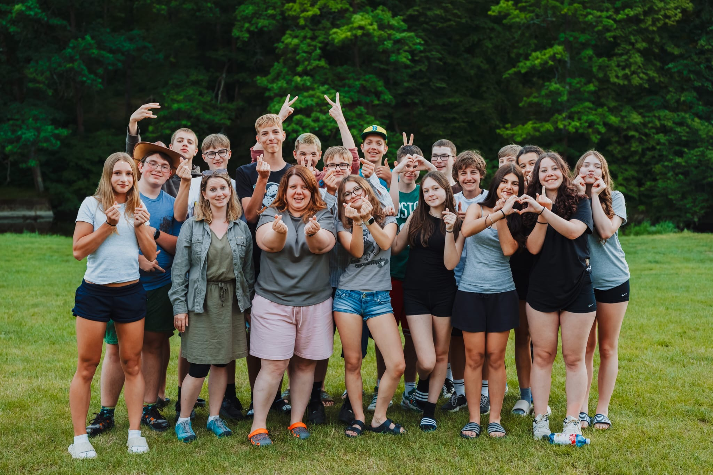
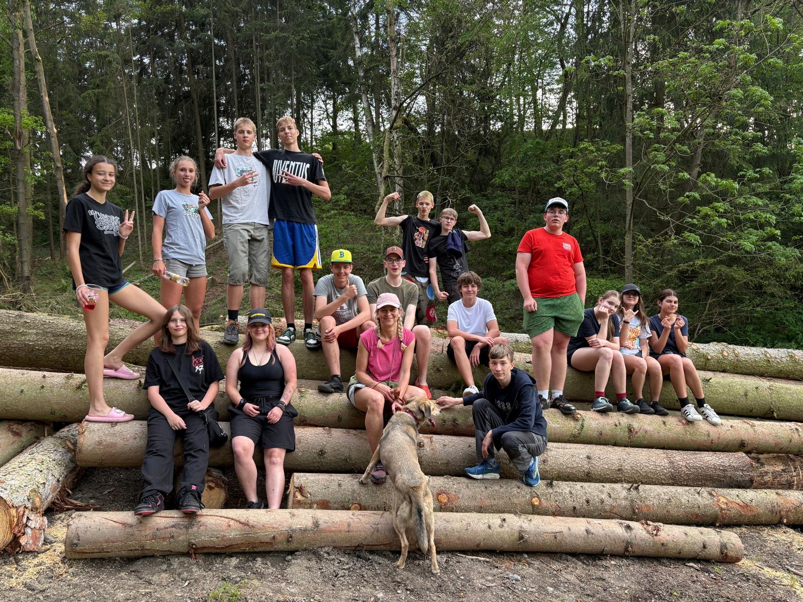
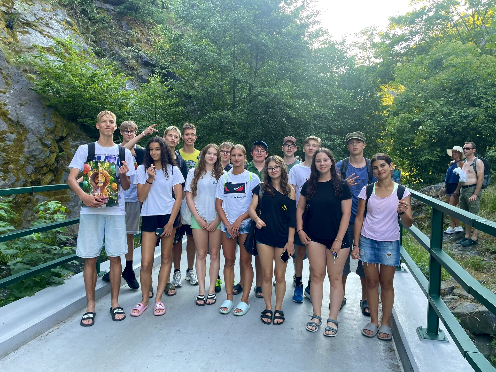
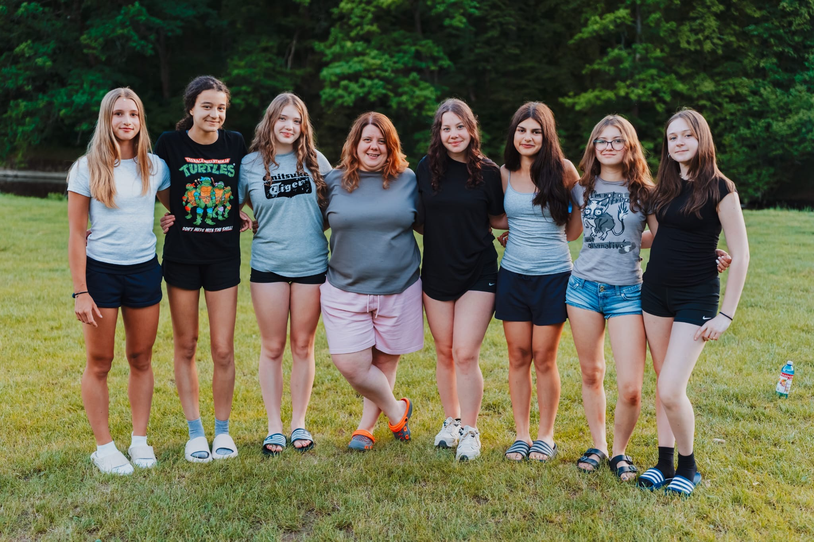
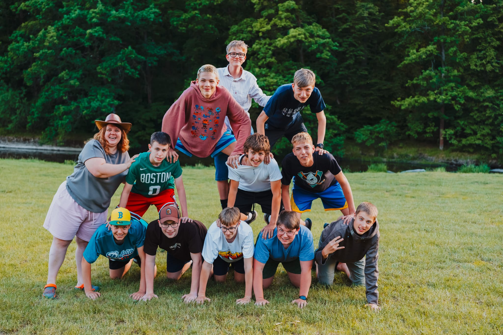

Závěrečný projekt 9. třídy
Naše třída • naše vzpomínky • náš příběh
O třídě
Jsme třída základní školy Korunovační, která začala své studium v roce 2017 a končí v roce 2026. Během let jsme zažili spoustu projektů, výletů, úspěchů i nezapomenutelných momentů.
Galerie


Fotografii se nepodařilo načíst. Otevřít znovu.

Fotografii se nepodařilo načíst. Otevřít znovu.

Fotografii se nepodařilo načíst. Otevřít znovu.

Fotografii se nepodařilo načíst. Otevřít znovu.

Fotografii se nepodařilo načíst. Otevřít znovu.

Fotografii se nepodařilo načíst. Otevřít znovu.Dokumentární video
Tento dokument zachycuje naši třídu z pohledu učitelů. Prostřednictvím rozhovorů s pedagogy vzpomínáme na společně strávené roky, školní zážitky, úspěchy i nezapomenutelné okamžiky. Cílem filmu je ukázat, jak naši třídu vnímali ti, kteří nás po celou dobu provázeli, a vytvořit trvalou vzpomínku na závěr našeho působení na ZŠ Korunovační.
Hudební klip třídy
Hudební klip, který jsme natočili společně s paní učitelkou Mgr. Simonou Plottovou.
Naše třída
Mgr. Růžena Pašková
Naše milovaná třídní učitelka, která nás provázela druhým stupněm základní školy.
InstagramVáclav Čečelovský
Nikolas Dušek
Isabelle Grünová
Stela Hájíčková
Viktorie Hájíčková
Karolína Chalupová
Adam Chládek
Šimon Chládek
Pavel Jablonský
Mariana Jančarová
Tom Janke
Matyáš Javůrek
Tomáš Javůrek
Oskar Kubíček
Matěj Kýhos
Nika Lichterman
Ema Mína Mátlová
Maksym Molodyrenko
Aya Nafati
Bohdan Priadko
Tetiana Shtoda
Emílie Šantúrová
Elisabeth Lindsey Textorová
Barbora Voláková
Rozálie Zemánková
Albert Zůbek